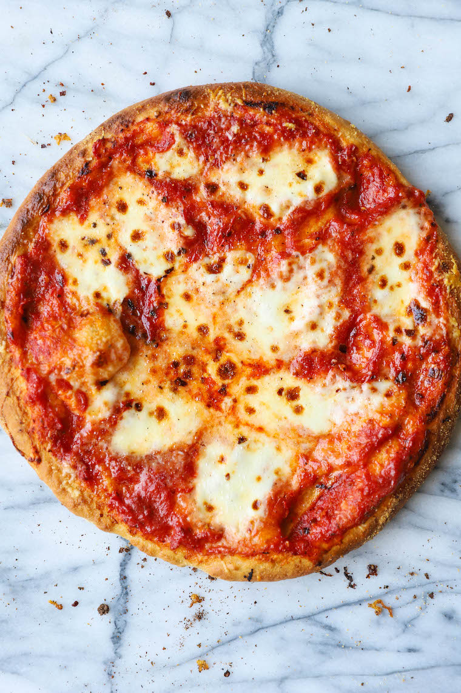

Homemade Pizza
Homemade Pizza

Surprisingly easy homemade pizza that's better than the restaurant
Dough
- Olive Oil
- Flour
- Salt
- Active Dry Yeast
Neapoliton
- Spicy Pizza Sauce
- Fresh Mozza/Boccicini
- Pizza Mozza
- Italian Seasoning
- Basil
- Cornmeal
Blac
- Old Cheddar
- Feta
- Garlic Salt
- Margerine
- Riccota
- Jalepenos
Steps
- Pour flour, salt, yeast, olive oil, and water into the large food processor and knead twice.
- Coat mixing bowl with olive oil and cover for minimum 1hr 30mins
- Coat surface with flour and mix dough with hands. Cut dough in half and cover both for 15mins.
- Place pizza stone in oven and start timer for 30 mins at 500 degrees.
- Flatten out both doughs and coat with olive oil -- let stand for 15 mins.
- Coat larger dough with pizza sauce, mozza, bocconcini, basil, and italian seasoning.
- Place on stone for 10mins -- Let stand for 5 to 8 mins.
Steps (Blac)
- After placing stone in oven, nuke margerine and garlic salt for 45sec.
- Coat surface with garlic spread, shredded old cheddar, feta, riccota, and jalepenos.
- After the neapoliton is done, place the blac on the stone for 10 mins.